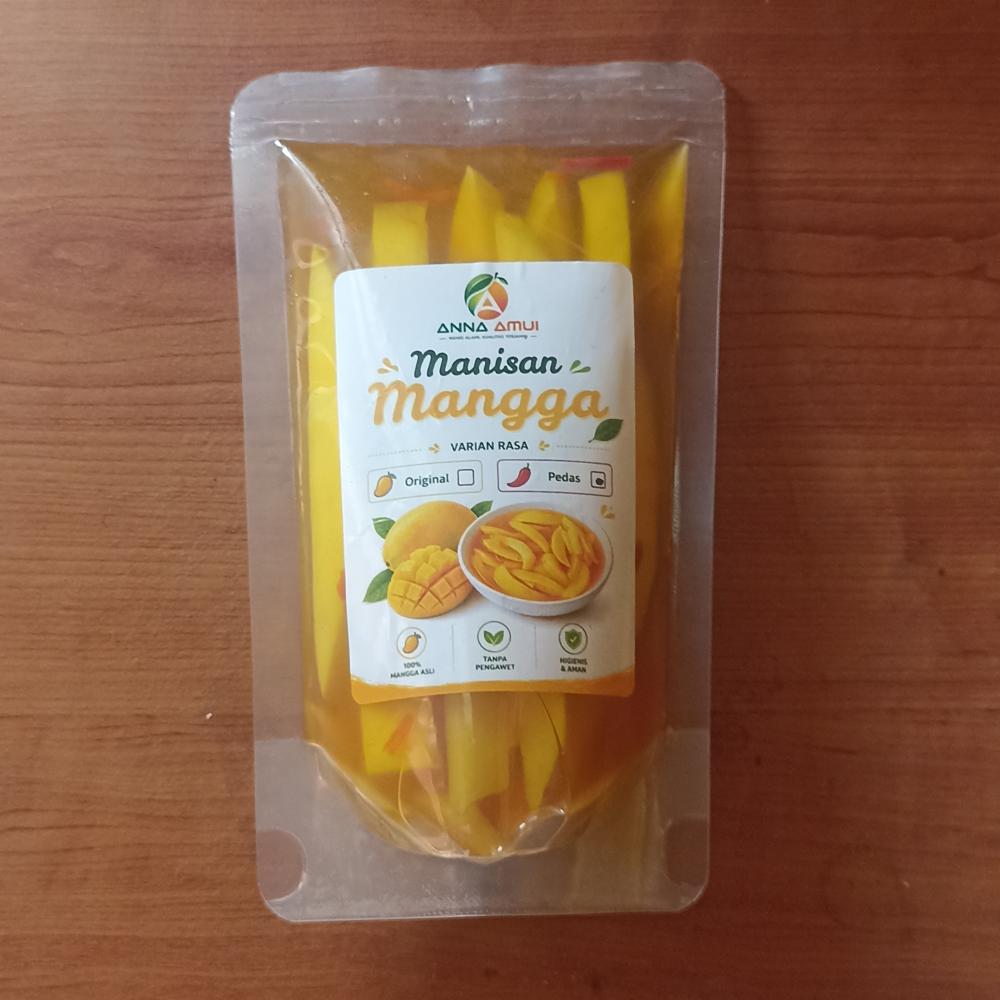

Cerita Hari Ini: Lagi Kangen Indonesia, Nggak Sengaja Nemu Web Ini... Akhirnya Langsung Check Out Manisan Mangga!
Pengalaman pertama mencoba Manisan Mangga Khas Indramayu yang rasanya segar, manis, sedikit asam, dan berhasil mengobati rasa kangen kampung halaman.

Halo teman-teman! Buat kalian yang lagi merantau di Hong Kong, pasti paham banget rasanya tiba-tiba kangen makanan khas Indonesia. Minggu lalu, pas lagi istirahat malam, saya iseng cari jajanan Nusantara di internet. Nggak sengaja saya nemu website pemesanan Manisan Mangga Khas Indramayu. Awalnya cuma penasaran, tapi setelah lihat foto produknya dan baca informasi yang ada di sana, saya jadi makin tertarik. Akhirnya saya langsung isi formulir pemesanan saat itu juga. Dalam hati saya berharap, semoga rasanya benar-benar bisa sedikit mengobati rasa kangen kampung halaman.
Kenalin, saya Clara, usia 28 tahun, seorang pekerja migran Indonesia yang bekerja sebagai asisten rumah tangga di Hong Kong. Rutinitas setiap hari cukup padat, jadi waktu istirahat atau hari libur adalah momen yang paling saya tunggu. Di saat-saat seperti itulah biasanya rasa kangen sama makanan dan camilan khas Indonesia tiba-tiba muncul.
Jujur, awalnya saya sempat ragu karena belum pernah pesan manisan mangga secara online dari Indonesia. Saya kepikiran, apa nanti rasanya benar-benar enak? Apa kemasannya aman sampai tujuan? Dan apakah proses pemesanannya bakal mudah?
Tapi setelah membaca informasi produk dan melihat beberapa testimoni pembeli di halaman pemesanan Anna Amui, saya mulai merasa lebih yakin. Cara pesannya juga ternyata simpel, cukup isi formulir lalu admin menghubungi lewat WhatsApp. Karena lagi benar-benar kangen jajanan Indonesia, akhirnya saya memutuskan untuk mencoba pesan beberapa bungkus.
Bagaimana Hasilnya Setelah Paket Sampai di Hong Kong?
Beberapa hari kemudian, paket pesanan saya akhirnya sampai. Kemasannya rapi dan produk diterima dalam kondisi baik. Begitu dibuka, aroma mangga segarnya langsung terasa. Saat gigitan pertama, perpaduan rasa manis, asam, dan segarnya langsung mengingatkan saya pada jajanan mangga yang sering saya beli waktu masih di Indonesia. Rasanya benar-benar bikin senyum sendiri karena sedikit mengobati rasa kangen kampung halaman.

Beberapa hari kemudian, saat hari libur, saya sempat membawa manisan mangga ini untuk dinikmati bersama teman-teman sesama pekerja migran Indonesia. Kami makan sambil mengobrol dan saling bercerita tentang kampung halaman. Ternyata mereka juga suka. Ada yang bilang rasanya pas, ada juga yang langsung bertanya saya belinya di mana.
Kalau kamu juga lagi kangen camilan khas Indonesia, kamu bisa lihat informasi lengkap dan melakukan pemesanan melalui website resmi Anna Amui. Menurut saya, proses pemesanannya mudah dan produknya layak dicoba, terutama buat yang sedang merantau dan ingin menikmati cita rasa khas Indonesia.
Kenapa Saya Memutuskan Mencobanya?
- Proses pemesanannya mudah dan tidak ribet.
- Foto produk dan informasi yang ditampilkan cukup jelas.
- Tersedia pilihan rasa Original dan Pedas sesuai selera.
- Cocok dinikmati saat waktu santai atau ketika sedang kangen camilan khas Indonesia.
Kalau kamu penasaran, coba lihat dulu produknya. Siapa tahu bisa jadi camilan favoritmu saat melepas rindu pada kampung halaman.

